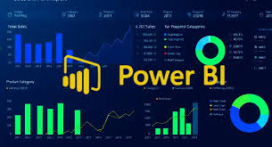

My Projects
Employee Data Analysis using Hive
In this project, I used Apache Hive to analyze large-scale employee datasets. The insights extracted include:
- Employee performance trends
- Salary distribution across departments
- Turnover rates and hiring patterns
Merchandise Sales Analysis Using Tableau
This project involved creating interactive dashboards in Tableau to visualize merchandise sales trends, including:
- Sales performance by region
- Revenue trends over time
- Customer segmentation insights
Fraud Detection Using Random Forest Classifier

Built a machine learning model to detect fraudulent transactions within a large financial dataset using a Random Forest Classifier. This project focused on handling imbalanced data, optimizing model performance, and ensuring real-world applicability for high-volume transaction environments.
Project Overview
The goal was to classify transactions as fraudulent or legitimate using detailed features like transaction type, amount, and account balances. Fraudulent cases were rare, so the model required techniques to handle class imbalance while maintaining high precision and recall.
Responsibilities & Techniques
- Data Preprocessing: Cleaned and prepared the dataset by handling missing values, outliers, and inconsistencies. Applied feature engineering to extract meaningful signals from raw data.
- Class Imbalance Handling: Used class weighting in the Random Forest model to emphasize rare fraud cases. Applied SMOTE (Synthetic Minority Over-sampling Technique) to balance the dataset.
- Model Development: Trained a Random Forest Classifier using scikit-learn. Tuned hyperparameters (n_estimators, max_depth, min_samples_split) for optimal performance.
- Model Evaluation: Assessed performance using Precision, Recall, F1 Score, Confusion Matrix, and ROC AUC. Focused on minimizing false negatives (missed fraud) while keeping false positives manageable.
- Deployment & Reporting (Optional): Designed a pipeline for real-time data integration. Created visual dashboards to communicate model performance to stakeholders.
Tools & Libraries
- scikit-learn • Pandas • NumPy
- imbalanced-learn (SMOTE)
- Matplotlib & Seaborn for visualization
- Jupyter Notebook for development and documentation
Key Achievements
- Balanced Performance: Achieved an F1 Score of X% with improved fraud detection through class balancing.
- Production-Ready: Designed the model for scalability in environments processing millions of transactions daily.
- Actionable Insights: Delivered interpretable results and deployment strategy for fraud detection systems.
- Real-World Impact: Enhanced understanding of handling class imbalance and building robust ensemble models for FinTech use cases.
Simulated Penetration Testing with Kali Linux
Conducted ethical hacking simulations using Kali Linux to explore various penetration testing techniques in a controlled, ethical environment. This project focused on simulating a real-world cyber attack on a vulnerable system, using a variety of Kali Linux tools to test network vulnerabilities and exploit weaknesses.
Tools and Skills Demonstrated
- Kali Linux: A Debian-based Linux distribution preloaded with various security tools for penetration testing and ethical hacking.
- Nmap: Used for network scanning to discover hosts and services within the target system.
- Metasploit: An exploitation framework used to create and execute exploit code against remote systems.
- Wireshark: Captured and analyzed network packets in real-time, identifying vulnerabilities in network communication.
- Burp Suite: Used for web application security testing, identifying issues like SQL injection and cross-site scripting (XSS).
- Hydra: Performed brute force attacks on various services (SSH, FTP, HTTP) to test password strength.
- Aircrack-ng: Conducted wireless network security testing, including cracking WEP and WPA-PSK encryption.
- John the Ripper: Cracked password hashes using methods like dictionary attacks and brute-forcing.
Purpose
The primary objective of this project was to simulate penetration testing techniques, applying them to identify and exploit system vulnerabilities in a controlled, ethical manner. This project reinforced my understanding of the penetration testing lifecycle and the ethical standards required in cybersecurity.
View Penetration Testing Project on GitHub📡 Network Traffic Analysis with Wireshark
Captured and analyzed raw network traffic to study how credentials and other sensitive data can be intercepted over unencrypted HTTP connections. Focused on recognizing Layer 7 POST requests and observing vulnerabilities when SSL/TLS is not present.
Skills Demonstrated
- Packet capture and inspection with Wireshark
- Understanding Application Layer (Layer 7) traffic
- Identifying credential leaks via HTTP POST requests
- Layer 6 analysis of unencrypted communication
Tools Used
- Wireshark
- Local lab environment with open HTTP traffic
Purpose
Used strictly for educational and ethical hacking research — no live data or real systems were compromised. This project strengthened my ability to detect suspicious activity at the network level and understand the data flow of unprotected sessions.
View ProjectFruit Grocery App Using .NET MAUI

Developed a cross-platform grocery shopping application using .NET MAUI, allowing users to browse and purchase fresh fruits with a seamless experience across Android, iOS, Windows, and macOS. The app integrates Azure SQL Database for secure and scalable data storage, ensuring real-time updates on product availability and pricing. Key features include: User-friendly interface with an interactive product catalog Secure authentication and payment processing Cloud-based data management using Azure SQL Cross-platform support leveraging .NET MAUI's single codebase This project showcases my ability to build modern, scalable applications with Microsoft technologies, emphasizing UI/UX design, database management, and cross-platform development.
View ProjectPower BI Open Assignment

Created interactive dashboards to analyze YouTube subscriber growth trends. The goal was to demonstrate my ability to connect to a dataset, clean and transform data, and visualize insights using Power BI. This project focused on deriving actionable insights from YouTube subscriber data using various visualization techniques.
Skills Demonstrated
- Connecting to Excel data in Power BI Online
- Data cleaning and transformation for actionable insights
- Creating visualizations such as line charts, scatter plots, and bar charts
- Generating and sharing reports via Power BI Service for collaboration
Tools Used
- Power BI Online
- Excel (Data Source)
Purpose
This project helped me develop my skills in data analysis and visualization, using Power BI to present insights into YouTube subscriber growth and engagement trends. It also demonstrated how to leverage Power BI's capabilities for interactive data presentation and collaboration.
View ProjectPower BI Sales Analysis
Analyzed sales data and created dashboards for sales strategy insights. This assignment demonstrates my ability to create meaningful visualizations using Power BI by analyzing sales data. The three tasks provided focus on sales performance, regional sales distribution, and profitability analysis across product categories. I used DAX measures and various visualization types to generate insights that help with decision-making in sales strategy. Conclusion: This assignment allowed me to demonstrate my skills in Power BI, focusing on: Data Modeling: Connecting the Sales, Product, and Region tables to create a robust data model. DAX Measures: Writing DAX measures to calculate key metrics like Total Sales, Sales by Region, and Total Profit. Data Visualization: Creating effective visualizations like Bar Charts and Pie Charts to communicate insights clearly. These visualizations are helpful for decision-making in sales strategy, regional performance analysis, and profitability assessment. This project has strengthened my skills in creating actionable business insights using Power BI.
View Project